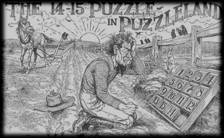

את משחק ה-14/15 המציא ב-1880 נוֹיס פאלמֶר צַ'פמן (Noyes Palmer Chapman), פקיד דואר אמריקני ממדינת ניו יורק. אך מי שהפך את המשחק לכל כך פופולרי היה סם לויד (Sam Loyd), ממציא מפורסם של משחקי חידה. כדי לשחק, יש לסדר 15 אריחים על-ידי החלקתם בתוך ריבוע של 16 × 16 אריחים.
והנה עובדה מפתיעה: לא כל סידור מספרים התחלתי מאפשר להגיע לסידור הסופי. לדוגמה, ניתן להוכיח שאפילו אם מחליפים מקומות רק בין האריחים 14 ו-15, הרי שלא ניתן לפתור את המשחק בצורה מלאה.
|  |
מודעת הפרסומת המקורית של המשחק.
בתמונה מופיע מצב התחלתי שאינו מאפשר פתרון.